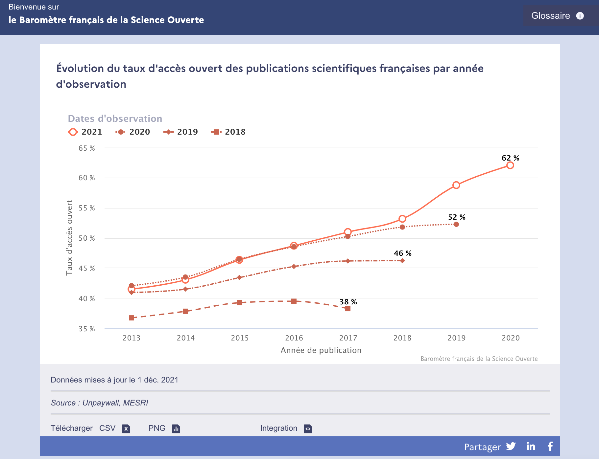

GROBID : mieux digérer les publications savantes pour muscler les communautés open source scientifiques
Anne L'Hôte
Département des outils d'aide
à la décision - SIES - MESR
GROBID
- GeneRation Of BIbliographic Data
- Logiciel open source
- Bibliothèque de machine learning
- Extraire, d'analyser et de restructurer des documents bruts en documents structurés
- PDF => XML/TEI structurés
- Focus particulier sur les publications techniques et scientifiques
- Faciliter l'exploration de texte, l'extraction d'informations et l'analyse sémantique de ces publications
GROBID
GROBID
- ü™ú Passage √† l'√©chelle
- üì¶ Conteneurisation
- Optimisation
- Fiabilité et consistence des données (bons taux de précision de rappel)
GROBID
- üêô https://github.com/kermitt2/grobid/
- ⭐ 1.820 stars
- ü™∂ Licence Apache 2
- 3.4K téléchargements sur Docker Hub
- ⌨️ Auteur principal : Patrice Lopez de Science Miner
GROBID

GROBID
Champs extraits par GROBID
- Extraction et analyse de l'en-tête
- Extraction et analyse des références
- Reconnaissance et liaison des contextes de citation
- Références isolées
- Analyse des noms
- Analyse des affiliations et de leurs adresses
- ...
BSO
- Pilotage des politiques publiques de la Science Ouverte
- Construction d'indicateurs (Dynamique d'ouverture des publications)
- Elargissement des objets scientifiques étudiés (jeux de donnée et codes logiciels)
- Problématique du téléchargement des PDFs
BSO
BSO

GROBID & BSO
- Utilisation et évolution de GROBID pour les usages du BSO
- Mesure d'ouverture des publications mentionnant un jeu de données et / ou un code logiciels
- Création ou amélioration des images Docker datastet et softcite pour détection dataset et code logiciel
GROBID & BSO
GROBID & BSO
Communauté
- MESR participe à l'Open Source via le développement d'outils libres
- Structuration des communautés d'usage
- Repérer les éventuels risques de vulnérabilité de la communauté par rapport à l'open source (vulnérabilité du logiciel utilisé lui-même) ou encore situation de forte dépendance à un outil unique
- Exemple : quelles disciplines utilisent grobid ? certaines en sont-elles complètement dépendantes ?
Des questions ?